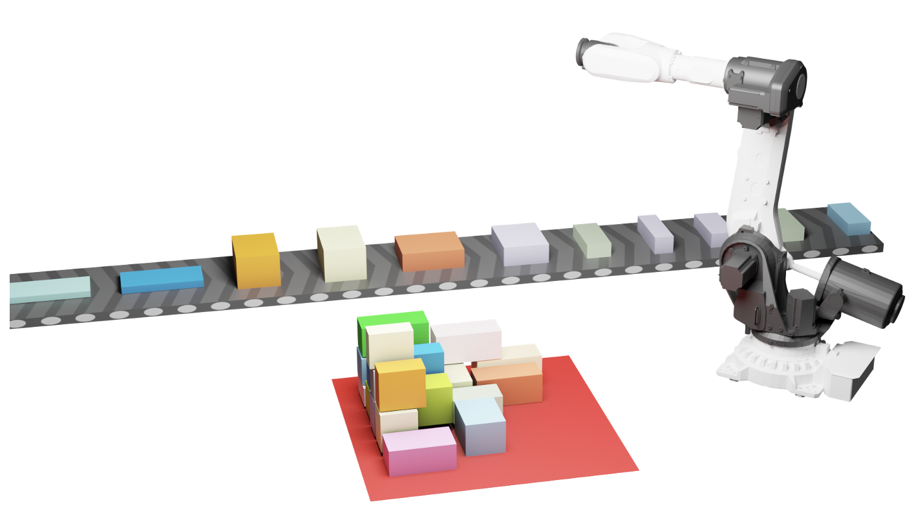

Accepted to IJRR · 2026
RoboBPPBenchmarking Robotic Online Bin Packing
with Physics-based Simulation
Real industrial datasets. Physics-based simulation. Robot-aware evaluation.
From a placement
to a robot action.
Watch a simulated robotic arm pick, move, and place boxes in Execution Pack.
- Dataset
- Repetitive
- Environment
- Physics-based simulation
- Playback
- 3× speed · 16-second loop
RoboBPP has been accepted to The International Journal of Robotics Research (IJRR).
The benchmark
Packing efficiency meets
physical feasibility.
A good placement must do more than fit. RoboBPP evaluates whether stacks remain stable and whether a robot can execute the plan.
Existing approaches are often evaluated with different datasets, problem settings, and metrics. RoboBPP brings these elements together in a unified framework: real industrial data, physics-based simulation, and evaluation that accounts for structural stability and operational safety.

Grounded in industry
Three datasets collected from real industrial workflows.
Increasing realism
Three settings connect geometric packing to robotic execution.
Shared evaluation
Baseline code, robot-aware metrics, and an online leaderboard.
See it in action
One task. Three levels of realism.
Can the robot execute the placement?
Physics simulation meets robotic motion planning and control, accounting for reachability, collisions, and stability during execution.
All demos show simulation footage. Use the video controls to play each sequence.
Real industrial workflows
Three datasets.
Distinct packing challenges.
Evaluate methods across repeated supply streams, mixed-size items, and long, slender materials.
Build on RoboBPP
Bring your method to the benchmark.
Explore the baseline implementations, run evaluations, and compare results across settings.
Reference
Cite RoboBPP
Accepted to IJRR. Use the arXiv citation below until the journal publication details are available.
@article{wang2025robobpp,
title = {{RoboBPP}: Benchmarking Robotic Online Bin Packing with Physics-based Simulation},
author = {Wang, Zhoufeng and Zhao, Hang and Xu, Juzhan and Zhang, Shishun and
Hu, Ruizhen and Zhu, Chenyang and Zeng, Zecui and Zhu, Weiyan and
Xiong, Zeyu and Yu, Haibin and Xu, Kai},
journal = {arXiv preprint arXiv:2512.04415},
year = {2025},
doi = {10.48550/arXiv.2512.04415},
url = {https://arxiv.org/abs/2512.04415}
}A collaborative effort
Acknowledgements
We thank the collaborators from the following institutions, and the authors of the packing methods and open-source tools used in this benchmark.
- Institute of AI For Industries, Chinese Academy of Sciences
- Shenzhen University
- National University of Defense Technology
- Wuhan University
- China Post Technology
- JD Technology
- SF Technology